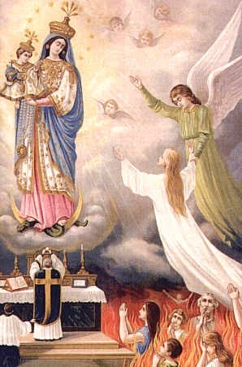

Ablässe und Messstipendien für die Armen Seelen
Ablassgebete für die Armen Seelen
Eines der wirksamsten Mittel, um den Armen Seelen zu helfen, sind die Ablassgebete. Die Päpste haben immer wieder darauf hingewiesen, dass die Lehre und der Gebrauch der Ablässe auf der Offenbarung beruhen. Der heilige Johannes zeigt uns in seiner Geheimen Offenbarung ein gewaltiges Bild:
«Der Engel zeigte mir einen Strom lebendigen Wassers, glänzend wie Kristall, ausgehend vom Throne Gottes und des Lammes (Christus). Am Ufer des Flusses steht der Baum des Lebens, der zwölfmal Früchte trägt; jeden Monat gibt er seine Frucht, die Blätter des Baumes aber dienen den Völkern zur Heilung.» (Apokalypse 22,1-3)
Damit sind die Gnadenmittel der Kirche gemeint, der «Thesaurus Ecclesiae», der Gnadenschatz der Kirche, den uns Christus durch seine Verdienste erworben hat und aus dem wir alle schöpfen dürfen, wie es der Herr verheißen hat:
«Umsonst werdet ihr den Dürstenden geben von der Quelle lebendigen Wassers.» (Apokalypse)
21,6) Die Lehre vom Ablass beruht auf der Schlüsselgewalt der Kirche, auf der stellvertretenden Genugtuung Christi und auf der Gemeinschaft der Heiligen.
Der Ablass ist der vor Gott gültige Nachlass zeitlicher Strafen, die hier oder im Jenseits noch abzubüßen sind, die der Schuld nach aber bereits vergeben worden sind. Gott hat vergeben, aber der Sünder muss noch Genugtuung leisten, bis der letzte Heller bezahlt ist. Die Gläubigen, die in der von der Kirche bestimmten Verfassung sind, erlangen den Ablass unter genau bestimmten Bedingungen durch die Hilfe der Kirche.
Jeder Gläubige, der nicht von der Gemeinschaft der Gläubigen ausgeschlossen ist, kann ihn gewinnen; er muss im Stand der Gnade sein, er muss die allgemeine Absicht haben, ihn zu gewinnen, und er muss die vorgeschriebenen Werke vollbringen. Vor allem aber muss er in der richtigen Verfassung sein: er muss sich innerlich von der Sünde gelöst haben und mit ganzem Herzen Gott anhangen und voll und ganz auf seine unendliche Barmherzigkeit vertrauen.
Den Lebenden kann man keine Ablässe zuwenden, immer aber – im Sinn einer Fürbitte – den Verstorbenen. Der Ablass gehört zu den geistlichen Werken der Barmherzigkeit.
Haben wir auch schon daran gedacht, dass nicht nur verstorbene Freunde und Bekannte auf unsere Hilfe warten, sondern vielleicht auch Menschen, an deren Strafen wir mitschuldig geworden sind? Beten wir, deshalb: Kleine Stoßgebete sollen auswendig geistig gesprochen werden. So werden wir in dieser Gegenwart Gottes zu leben und auch mit den Verstorbenen eine lebendige Gemeinschaft zu pflegen.
Gott will, dass wir mit unseren Talenten wuchern. Sicher handeln wir im Sinn und Geist des barmherzigen Gottes, wenn wir auch mit den Gnadenschätzen der Kirche wuchern, die er uns in so reichem Maß zur Verfügung gestellt hat.
Diese Werke der Barmherzigkeit kommen nicht nur unseren verstorbenen Freunden, sondern auch uns selbst und der ganzen Kirche zugute.
Früher wirkte jedes der Gebete einen Ablass von 100 bis 500 Tagen. Nach der neuen Ablassordnung, die am 1. Januar 1967 durch die Apostolische Konstitution Indulgentiarum doctrina in Kraft trat, werden sie nicht mehr «Tageablässe» genannt; sondern es heißt: jedes dieser Gebete erwirkt einen Teilablass.
Damit soll der Gefahr vorgebeugt werden, dass beim Gebet der Quantität mehr Gewicht beigemessen wird als der Qualität: Ein ehrlicher Aufschrei des Herzens gilt bei Gott mehr als lange Gebete.
Wie der Hirsch verlangt nach frischer Quelle,
so verlangt meine Seele nach Dir, o Gott.
Meine Seele dürstet nach Gott, dem lebendigen Gott:
Wann darf ich kommen und Gottes Angesicht schauen?
— Psalm 42,2-3
Ablässe für die armen Seelen
Voraussetzungen für den Ablass sind Beichte, entschlossene Abkehr von jeder Sünde, Kommunionempfang und Gebet in der Meinung des Heiligen Vaters.
Dem Gläubigen, der einen Friedhof andächtig besucht und wenigstens im Geiste für die Verstorbenen betet, wird ein Ablass gewährt. Dieser Ablass kann nur den Seelen im Fegefeuer zugewendet werden. An jedem Tag zwischen dem 1. und 8 November kann ein Vollablass gewonnen werden, an jedem anderen Tag des Jahres ein Teilablass.
Ein Vollablass, der aber nur den Seelen im Fegefeuer zugewendet werden kann, wird dem Gläubigen gewährt, der am Allerseelentage
(2 November) eine Kirche oder öffentliche Kapelle (private oder halböffentliche Kapelle nur deren rechtmäßige Benutzer) besucht. Dieser Ablass kann gewonnen werden entweder an diesem Tage oder an einem vom Ordinarius bestimmten Sonntag vorher oder nachher oder auch am Feste Allerheiligen (1 November). Bei diesem Besuch wird ein Vaterunser und das Glaubensbekenntnis gesprochen.
Dem Gläubigen, der einen Friedhof andächtig besucht und mündlich oder innerlich für die Verstorbenen betet, kann täglich den Verstorbenen einen Ablass von 7 Jahren gewinnen.
(Pius XI. 31.10.1934)
Das Gebet " Requiem aternam " erhält einen Teilablass, der aber nur den Seelen im Fegefeuer zugewendet werden kann.
Herr, gib Ihnen die ewige Ruhe und das ewige Licht leuchte Ihnen. Lass sie ruhen in Frieden.
(300 Tage jedesmal Pius X. 13.02.1908)
Milder Herr Jesus, gib ihnen ( ihm, ihr ) die ewige Ruhe!
(300 Tage jedesmal Pius X. 18.03.1900)
Dich also bitten wir, komme den im Fegfeuer zurückgehaltenen Seelen zu Hilfe, die du mit deinem kostbaren Blute erlöst hast.
(300 Tage jedesmal Pius X. 13.9.1908)
Ablaßgebet für die verlassenen Armen Seelen
Jesus, um der Schmerzen willen, die Du bei Deiner Todesangst im Garten Gethsemane, bei der Geißelung und Dornenkrönung, auf dem Weg zum Kalvarienberg, bei Deiner Kreuzigung und Deinem Hinscheiden erduldet hast, erbarme Dich der Seelen im Fegfeuer, besonders jener, die ganz vergessen sind! Erlöse sie aus ihren bitteren Qualen, rufe sie zu Dir und schließe sie im Himmel liebevoll in Deine Arme! Vater unser. . . Gegrüßet ... Herr, gib ihnen...
500 Tage Ablaß
Gebet für die verstorbenen Eltern
Gott, Du hast uns geboten, Vater und Mutter zu ehren. Erbarme Dich gnädig der Seelen meines Vaters und meiner Mutter; verzeihe ihnen ihre Sünden und gib, daß ich sie einst wiedersehe in der Freude des ewigen Lichtes! Durch Christus, unsern Herrn. Amen.
3 Jahre Ablaß. - Vollkommener Ablaß unter den gewöhnlichen Bedingungen, wenn man das Gebet einen Monat lang jeden Tag verrichtet
Gebet für die verstorbenen Priester
Gott, Du hast unter den Nachfolgern der Apostel im Priesteramt Deine Diener, für die wir beten, mit der priesterlichen (oder bischöflichen) Würde geschmückt. Wir bitten Dich, gib, daß sie auch für immer in die Gemeinschaft der Apostel aufgenommen werden. Durch Christus, unsern Herrn. Amen.
Unvollk. Ablass - Vollkommener Ablass, wenn man es einen Monat lang jeden Tag betet.
Ablaß von 3000 Jahren, der den Armen Seelen zugewendet werden kann.
Aus einem sehr alten Gebetbuch entnommen.
Quelle: Joseph Ackermann (Pfr.) / Kiser: Trost der Armen Seelen
Gott grüße Dich Maria!
Gott grüße Dich Maria!
Gott grüße Dich Maria!
O Maria, ich grüße Dich 33-tausendmal, wie Dich der hl. Erzengel Gabriel gegrüßt hat. Es erfreut Dich in Deinem Herzen und mich in meinem Herzen, daß der hl. Erzengel zu Dir den himmlischen Gruß gebracht hat.
Ave Maria (3mal beten)
Gebet zum göttlichen Schmerzensmann
Gottesknecht und Schmerzensmann Jesus Christus, um der Schmerzen willen, die Du bei Deiner Todesangst im Ölgarten, bei der Geißelung, bei der Dornenkrönung, auf dem Weg nach Golgata, bei der Kreuzigung und bei Deinem Hinscheiden erduldet hast, erbarme Dich der Armen Seelen im Fegfeuer, besonders jener, die am meisten vergessen sind! Erlöse sie aus ihren bitteren Qualen, rufe sie zu Dir und schließe sie im Himmel liebevoll in Deine Arme!
(Teilablass)
Das „Gedenke“ - Gebet zu unserer lieben Frau - Ablassgebet
Gedenke o gütigste Jungfrau Maria, dass es noch nie gehört worden ist, dass jemand, der zu dir seine Zuflucht genommen, deine Hilfe angerufen und um deine Fürbitte gefleht, von dir sei verlassen worden. Von solchem Vertrauen erfüllt nehme ich meine Zuflucht zu dir, Jungfrau der Jungfrauen, meine Mutter, zu dir komme ich, vor dir stehe ich seufzend als elender Sünder. O Mutter des ewigen Wortes, wollest meine Worte nicht verschmähen, sondern höre mich gnädig an und erhöre mich. Amen.
* Zuflucht der Sünder, bitte für uns.
Beten Sie ein „Gegrüßet seist du, Maria“
* Trösterin der Betrübten, bitte für uns.
Beten Sie ein „Gegrüßet seist du, Maria“
* Hilfe der Christen, bitte für uns.
Beten Sie ein „Gegrüßet seist du, Maria“
Wenn dieses Gebet einmal gebetet wird, bewirkt es einen Ablass von 3 Jahren für eine Seele im Fegefeuer
Wenn dieses Gebet einen Monat lang täglich gebetet wird, bewirkt es einen vollständigen Ablass für eine Seele im Fegefeuer.
Gebet der hl. Gertrud von Helfta
Nonne, Mystikerin * 6. Januar 1256 in Thüringen † 17. November 1302 in Helfta bei Eisleben in Sachsen-Anhalt
Der Herr sagte der heiligen Gertrud, dass das folgende Gebet, jedesmal, wenn es gesprochen wird, tausend Seelen aus dem Fegfeuer befreit. Dieses Gebet wurde erweitert, um die lebenden Sünder einzuschließen und um entstandene Schulden schon zu Lebzeiten zu mindern:
Ewiger Vater, ich opfere dir das höchst Kostbare Blut Deines göttlichen Sohnes Jesus auf, zusammen mit allen heiligen Messen, die heute auf der ganzen Erde gefeiert werden, für alle Armen Seelen im Fegfeuer, für alle Sünder überall, für alle Sünder in der Weltkirche und diejenigen in meinem Hause und in meiner Familie. Amen.
(Genehmigt und empfohlen, gez.: M. Kardinal Pahiarca,
Lissabon, Portugal, den 4. März 1936)

Aufopferung der heiligen Messe.
Was glaubt Ihr, ist die wirksamste und größte Hilfe für die unerlösten Seelen im Fegefeuer? Das ist die Aufopferung der heiligen Messe
Im Meßopfer erlangen wir nach den Worten des heiligen Gregor von Nazianz "Anteil an Christus, an Seinen Leiden, an Seiner Gottheit." Folglich erhalten die Armen Seelen, wenn wir für sie die heilige Messe aufopfern.
Anteil an Christus, an Seinen Leiden und Seiner Gottheit durch die Gliedschaft am mystischen Leib; und eben dieses Anteilhaben an den Leiden Christi bewirkt den Loskauf von allen Sündenstrafen und ihre Befreiung aus dem Fegfeuer. - Es gibt nichts Größeres und Wertvolleres auf Erden als das heilige Meßopfer, bei dem täglich Jesu heiliges und heiligendes Blut fließt. Mit diesem Kostbaren Blut Jesu dürfen wir die leidenden Seelen am meisten trösten. Christi Blut ist ein unendlicher Trost und Segen für die in den Flammen sühnenden Seelen. Die Armen Seelen dürsten förmlich danach. Im Fegfeuer wird alles vom Kostbaren Blut betaut und beglückt. - Dieses Blut wäscht Sündenschuld und tilgt Sündenstrafen; es reinigt und vollendet die Seelen.
"Heiland, wir können Dir nicht genug dafür danken, daß Du uns im heiligen Kreuzesopfer auf ungezählten Altären Tag und Nacht Dein erlösendes Blut schenkst, auf daß wir es dem himmlischen Vater aufopfern, sowohl fÜr unsere eigenen sündigen Seelen, als auch für die leidenden Seelen im Reinigungsort. Vom Aufgang der Sonne bis zum Niedergang fließt Dein Blut - ohne Unterbrechung.
Würden wir es mit der ganzen Glut unseres Herzens auffangen und mit einem, unbegrenzten Vertrauen ausgießen, müßten schier für einen Augenblick die Gluten des Fegfeuers erlöschen." -
Ja, in Strömen floß das Blut Christi am Kreuz und es fließt weiter auf unseren Altären, aber es bedarf der Seelen, die dieses Kostbare Blut, diesen höchsten Gnadenschatz, auffangen und weiterleiten an den Ort der Sühne.
Am wirksamsten wird diese Aufopferung, wenn wir uns mit Maria zu Füßen des Kreuzes vereinen und sie kindlich bitten, SIE möge mit ihren mütterlichen Händen das Erlöserblut ihres Sohnes, über alle leidenden Seelen im Fegfeuer ausgießen, besonders auch über unsere Angehörigen, die dort noch leiden müssen sen. Vergessen wir doch diese keinen einzigen Tag! Sie gehören immer zu uns.
Bericht von sechs heiligen Messen
welche für Lebendige und Verstorbene zu Gottes höchstem Lobe, zu dessen Ehren und Danksagung und für die Armen Seelen im Fegefeuer mit großem Verdienste und zum Nutzen und Trost angewendet und gefeiert werden können, wie aus folgendem zu entnehmen ist.
Ein hochgelehrter, gottseliger Priester der Gesellschaft Jesu und Lehrer der Heiligen Schrift hat, durch Offenbarung erleuchtet, dem Volke öffentlich gepredigt, dass, wenn man diese 6 hl. Messen für einen Verstorbenen feiern lasse, dessen Seele augenblicklich aus dem Fegefeuer erlöst werde, wenn sie auch bestimmt gewesen sei, bis zum Jüngsten Tage zu leiden.
Zwei Frauen, welche in der Predigt waren, und dies gehört hatten, versprachen einander, sobald eine vor der anderen sterbe, wolle die Überlebende der Verstorbenen jene 6 hl. Messen feiern lassen, was auch geschah. Nachdem eine dieser beiden Frauen gestorben war, liess die andere, ihres Versprechens eingedenk, für jene die 6 hl. Messen feiern, worauf ihr in der Nacht de Verstorbene in so unaussprechlicher Schönheit und Klarheit erschien, dass sie vor Freude und Entzücken ganz ausser sich war und 3 Tage hindurch weder Speie noch Trank zu sich nahm. Als sie dann wieder zu sich kam, war ihr einziger Wunsch, ebenfalls zu sterben. Sie verordnete, dass die 6 hl. Messen für sie selbst gefeiert werden und starb fröhlich und selig, nachdem dieses geschehen, den siebten Tag darauf.
Eine Seele, welche bis zum Jüngsten Tage im Fegefeuer hätte leiden müssen, erschien einem frommen Priester und sagte ihm, er solle ihr doch diese 6 hl. Messen lesen. Nachdem der Priester solche mit grosser Andacht verrichtet hatte, ist die Seele zu ihm gekommen und hat gesagt: Ich bin die Seele, für welche du diese 6 hl. Messen gelesen hast. Gott und dir sei der höchste Dank gesagt, dass ich von so grosser Pein bin erlöst worden, die ich sonst bis zum Jüngsten Tag hätte leiden sollen.
Wenn ein Mensch bei einem geweihten Priester für Lebende oder Verstorbene sechs heilige Messen nach folgender Ordnung feiern lässt, so wird unfehlbar die Seele desjenigen, für welche jene hl. Messen geopfert werden, sogleich aus der schmerzlichen Gefangenschaft des Fegefeuers erlöst werden.
Zu bemerken ist, dass diese 6 hl. Messen von einem Priester in folgender Ordnung und Meinung zelebriert werden müssen:
Die 1. hl. Messe
soll zu Ehren der unschuldigen Gefangennehmung unseres lieben Herrn Jesus Christus geopfert werden, damit die Seele, welche man beabsichtigt, aus ihrer Gefangenschaft und vor der schmerzlichen Pein im Fegefeuer wegen ihrer auf der Welt begangenen Sünden zu befreien, erlöst werde.
Die 2. hl. Messe
soll zu Ehren des unschuldigen Gerichts, welches unser lieber Herr Jesus Christus über sich hat ergehen lassen, geopfert werden, damit die arme Seele von den schweren Peinen, wozu sie ihrer begangenen Sünden wegen durch das strenge Gericht Gottes verdammt war, freigesprochen werde.
Die 3. hl. Messe
soll zu Ehren der unschuldigen Verspottung unseres lieben Herrn Jesus Christus, die er sein ganzes Leben hindurch und besonders in seinem letzten schmerzlichen Leiden am Stamme des heiligen Kreuzes erduldet hat, geopfert werden, damit er die arme Seele von aller peinlichen Verfolgung und allen Strafen, die sie wegen ihrer Sünden billig verdient hat, lossprechen wolle.
Die 4. hl. Messe
soll zu Ehren der hl. Wunden und Schmerzen unseres lieben Herrn Jesus Christus sowie des Elendes und Todes, den er am Stamme des hl. Kreuzes gelitten hat, geopfert werden, damit er die arme Seele von allen tödlichen Wunden, die sie durch ihre grossen Sünden erhalten hat, heilen und von der verdienten Strafe freisprechen wolle.
Die 5. hl. Messe
soll zu Ehren des Begräbnisses unseres lieben Herrn Jesus Christus geopfert werden, um denselben zu bitten, dass er alle von der armen Seele begangenen Sünden und Missetaten in seine unendliche Barmherzigkeit ewig begraben und dieselbe von der verdienten Strafe lossprechen möge.
Die 6. hl. Messe
soll zu Ehren unseres lieben Herrn Jesus Christi Auferstehung und Himmelfahrt gefeiert werden, damit er die arme Seele aus dem Schatten des Todes an das ewige Licht bringen und ihr eine baldige Auferstehung und schnelle Himmelfahrt verleihen wolle.
Hierbei ist zu bemerken, dass niemand aussprechen kann, welch grosse Verdienste sich derjenige bei Gott erwirbt, der den Nutzen der vorgemeldeten 6 hl. Messen, und in welcher Weise sie gefeiert werden sollen, bekannt macht.
Es wird darüber gesagt:
Wenn ein Mensch durch die ganze Welt von einem hl. Ort zum anderen wallfahrtet, so kann er sich nicht so viele und grosse Verdienste erwerben, als wenn er andere Menschen ermahnt, von diesen 6 hl. Messen Gebrauch zu machen, weil dadurch viele arme Seelen erfreut und erlöst werden.
Auch darf nicht vergessen werden zu sagen, welch grossen Nutzen sich jeder Mensch schafft, wenn er diese 6 hl. Messen schon bei seinen Lebzeiten für sich selbst feiern lässt. Denn er erlangt dadurch nicht allein Verzeihung seiner Sünden, sondern kommt auch durch die Kraft jener 6 hl. Messen, selbst wenn er bei Gott in Ungnade steht, zur Erkenntnis und Reue derselben, und entrinnt dadurch der ewigen Verdammnis.
(Imprimatur!)
Aus einem alten Gebetbuch, approbiert von Papst Clemens XII. Die erwähnten sechs hl. Messen werden auch "Leidensmessen" genannt. Papst Clemens XII (1730 - 1740) hat diese sechs hl. Messen approbiert und empfohlen. Die sechs hl. Messen werden an sechs aufeinander folgenden Tagen gelesen, die "Gregorianischen Messen" an 30 aufeinander folgenden Tagen.
Gregorianische Messen
Es ist ein häufiger Brauch, für die Verstorbenen Gregorianische hl. Messen zu wünschen. Dabei handelt es sich um dreißig hl. Messen, die an dreißig aufeinander folgenden Tagen gefeiert werden müssen.
Dieser Brauch ist zurückzuführen auf Papst Gregor den Großen, gestorben im Jahr 604. Als dieser noch Abt von St. Andreas war, ließ er für einen verstorbenen Mönch Justus dreißig hl. Messen hintereinander feiern. Das war die Zeit einer damals üblichen Trauerperiode. Nach Ablauf dieser Tage meldete sich der verstorbene Mönch dem Papst in einer Vision und teilte seine Befreiung aus dem Reinigungsort mit.
Aus diesen Ereignis heraus setzen auch heute noch viele Gläubigen großes Vertrauen auf die baldige Erlösung ihrer Lieben aus der Läuterung durch diese Art der hl. Messen. Manche wünschen diese hl. Messen schon zu Lebzeiten in der Meinung, dass sie ihnen nach dem Tode zugute kommen, weil ja, wie sie oft sagen, "später niemand mehr auf Erden für sie beten wird".
Vom hl. Papst Gregor I. approbierte und empfohlene 30 hl. Messen an 30 aufeinander folgenden Tagen
Mehr im Buch “ Gebete mit Verheißungen ”, Seite 114-119
ISBN: -3929170-14-0
Hier können sie die Messen bestellen:
Messen lesen lassen bei der
Abtei Saint-Joseph de Clairval in Flavigny
https://soutenir.clairval.com/de-messstipendien
Eine Messe
Eine Novene
(Eine Novene ist die Feier einer Messreihe von 9 Messen hintereinander).
Gregorianische Messen (Reihe von 30 Messen)
Spendet man Geld, um eine Messe feiern zu lassen, so bedeutet das nicht, dass man eine Messe kauft, denn eine Messe hat keinen Preis: Der „Preis“, den Christus durch sein Opfer bezahlt hat, ist unermesslich hoch. Er hat sich geopfert und hat mit seinem Blut Menschen „aus jedem Stamm und jeder Sprache, aus jedem Volk und jeder Nation“ für Gott erkauft (Offenbarung 5,9). Das gespendete Geld ist nicht für die Bezahlung der Messe gedacht, sondern als Beitrag zum Lebensunterhalt des Priesters; ein Messstipendium ist also eine finanzielle Zuwendung mit dem Hauptzweck, den Priester und seine Gemeinde zu unterstützen.